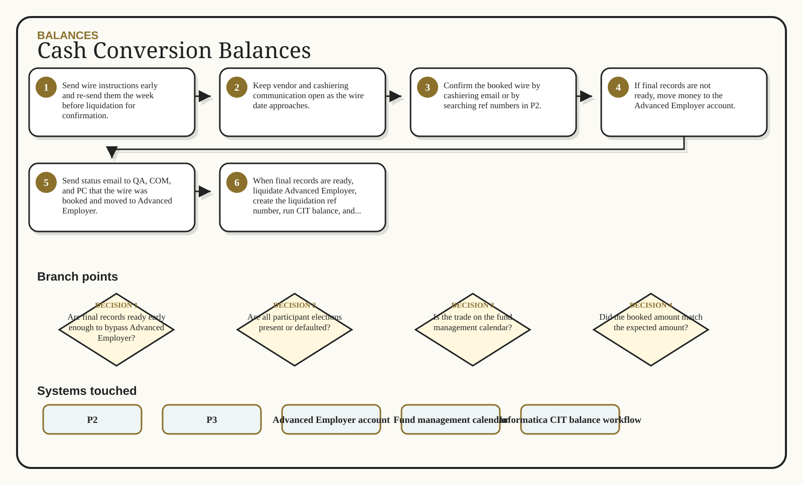

Cash Conversion Balances
Book the wire, hold in Advanced Employer if needed, then invest by current elections.
Multi-branch visual route

Decisions that change the route
Are final records ready early enough to bypass Advanced Employer?
Are all participant elections present or defaulted?
Is the trade on the fund management calendar?
Did the booked amount match the expected amount?
Inputs -> action -> output
Wire instructions
Wire date and effective date
Cashiering estimate and final amount
P2 booking confirmation or email
Send wire instructions early and re-send them the week before liquidation for confirmation.
Keep vendor and cashiering communication open as the wire date approaches.
Confirm the booked wire by cashiering email or by searching ref numbers in P2.
If final records are not ready, move money to the Advanced Employer account.
Booked wire confirmation
Advanced Employer purchase and liquidation records
CIT balance posting
Participant purchases